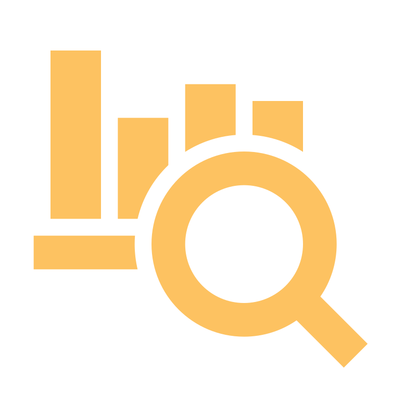
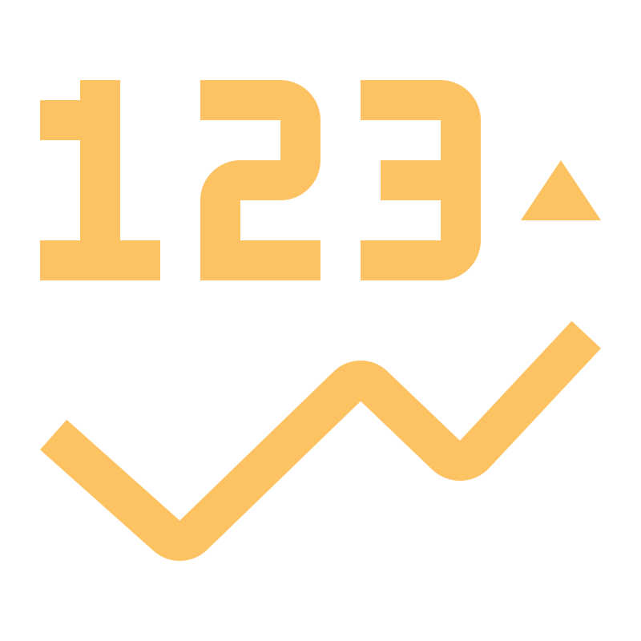
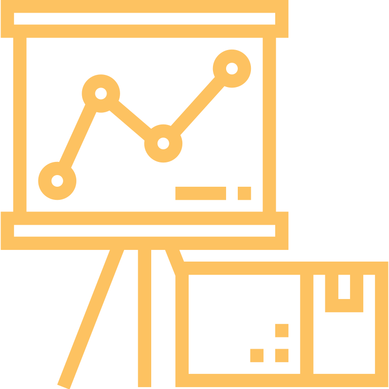
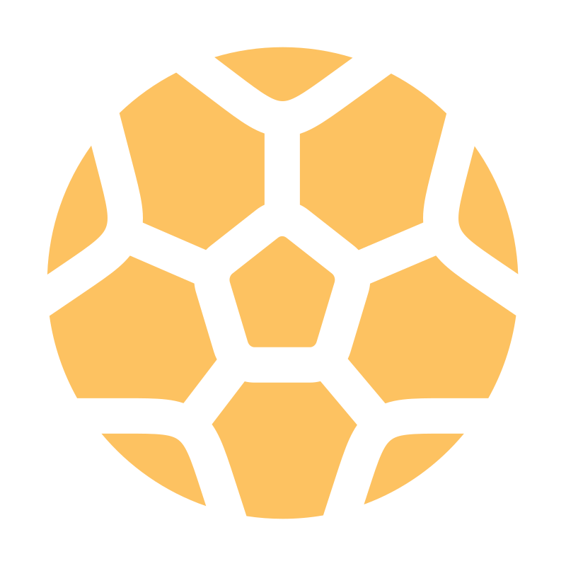

Ingénieur Big Data & IA spécialisé dans le domaine sportif, je conçois des analyses et outils d'aide à la décision pour optimiser performance, préparation et recrutement.
Je transforme des données brutes en insights directement exploitables.
Expériences terrain au Standard de Liège (BEL), Parma Calcio 1913 (ITA) et Vannes OC (FRA).
De plus, fort de 3 ans en Data/IA au Ministère des Armées, j'adopte une approche rigoureuse et orientée impact réel.
Ce que la data peut vous apporter
01
Collecte & Structuration
Systèmes pour récupérer, nettoyer et organiser les données de performance, physiques et événementielles.
02

Analyse des Performances
Identification des tendances, forces, faiblesses et leviers d'amélioration individuels et collectifs.
03

Indicateurs Avancés
Métriques, scores et modèles prédictifs pour mieux comprendre et anticiper les performances.
04

Visualisation Percutante
Dashboards lisibles et directement utiles pour joueurs, staff technique et direction sportive.
Références professionnelles

Jérôme Bonnissel
Standard de Liège · JPL
Développement d’outils data pour identifier des profils de joueurs et optimiser les stratégies de scouting...
Lire plus →
Marc Wilmots
Standard de Liège · JPL
Développement d’outils data pour identifier des profils de joueurs et optimiser les stratégies de scouting...
Lire plus →
Sébastien Coustou
Parma Calcio · Head of Data
Contribution à un projet d’estimation de la valeur marchande des joueurs, analyses statistiques et préparation de données pour la data visualisation au sein du département performance.
Lire plus →
Mathieu Lacome
Parma Calcio
Contribution à un projet d’estimation de la valeur marchande des joueurs, analyses statistiques et préparation de données pour la data visualisation au sein du département performance.
Lire plus →
Sullivan Coppalle
Vannes OC
Dashboard GPS hebdomadaire de suivi de charge externe, objectifs individualisés, indicateurs visuels ...
Lire plus →
Parcours · Compétences · Réalisations
Mon CV
💼
Expériences professionnelles
Data Scientist & Data Analyst Scout — Standard de Liège
Actuel
📍 Septembre 2025 — Aujourd'hui · Liège, Belgique · Jupiler Pro League
Mise en place et structuration des processus data dédiés au scouting et à l'aide à la décision. Développement d'outils d'analyse, d'indicateurs et de méthodologies pour identifier des profils pertinents et optimiser les stratégies de recrutement.
Data Scientist — Datatim
📍 2024 — 2025 · Rennes, France
Pilotage de la qualité et des flux de données, création de tableaux de bord adaptés aux besoins métiers et veille active sur les innovations en Data et IA.
Apprenti Data Scientist — Ministère des Armées
📍 2021 — 2024 · Bruz, France
Développement de démonstrateurs en Machine Learning, Deep Learning et NLP, dashboards interactifs, outils d'aide à la décision basés sur l'analyse de données complexes.
Stagiaire Data Scientist — Parma Calcio 1913
📍 2023 · Parma, Italie · Serie A
Conception d'un modèle d'estimation de la valeur marchande des joueurs, analyses statistiques ponctuelles et préparation de tables pour les projets de data visualisation.
Bénévole Data Analyst — Vannes Olympique Club
📍 2022 — 2023 · Vannes, France · National 2
Tableau de bord hebdomadaire de suivi de la charge externe GPS avec objectifs individualisés pour optimiser la préparation physique.
Apprenti Data Analyst — Union Sport & Cycle
📍 2020 — 2021 · Paris, France
Tableaux de bord Power BI et analyse de données économiques pour les décisions stratégiques de la filière sport.
🎓
Formation
Diplôme d'Ingénieur — Big Data & Intelligence Artificielle
BAC +5
📍 2021 — 2024 · CNAM, Niort
Spécialisé en Data Science, Machine Learning, Big Data et IA avec applications en modélisation prédictive et visualisation.
Lauréat — Opta Forum Research 2024 · Stats Perform
🏆 Londres
📍 2024 · Opta Forum, Londres
Lauréat dans la catégorie "Event Data" avec
"Analyse de l'impact des touches dans le football moderne"
.
Présentation des résultats sur scène à Londres.
Vidéo disponible :
voir la présentation
Expertise en Data
Gestion & Structuration des données
Web scrapingBases de donnéesRequêtage SQLAutomatisation fluxAPI
Développement d’une application Streamlit dédiée à l’analyse post-match de données
événementielles OPTA. Le projet permet d’explorer et visualiser rapidement les principaux
insights d’une rencontre à partir des événements de match, dans une logique d’aide à
l’analyse de performance.
PythonStreamlitOptaPandas
Projet personnel2023
Voir le projet →
Football · ML
02
Modèle xG / xGOT & Shot Placement
Développement d’une application Streamlit d’analyse de tirs à partir de données
événementielles Opta. Le projet combine des visualisations de shot placement et de
préférences sur penalty avec deux modèles de machine learning dédiés au calcul du
xG (Expected Goals) et du xGOT (Expected Goals on Target).
PythonStreamlitOptaML
Projet personnel2024
Voir le projet →
Football · DataViz
03
AFCON Analytics Dashboard
Création d’un dashboard interactif dédié à la Coupe d’Afrique des Nations
permettant d’explorer les données des sélections, joueurs et clubs participant
à la compétition. Le projet inclut également un algorithme de prédiction du
vainqueur basé sur l’ELO des nations et l’historique des résultats.
TableauPythonDataVizFootball Data
Projet personnel2024
Voir le projet →
Football · Research
04
Analyse de l’Impact des Touches dans le Football Moderne
Projet de recherche présenté lors de l’Opta Forum 2024 à Londres. L’analyse
utilise les données événementielles Opta pour étudier comment les équipes
exploitent les touches afin de générer des séquences offensives et des
opportunités de tir dans différents contextes de match.
PythonOpta DataPandasFootball Analytics
Opta Forum 2024 · London2024
Voir le projet →
Football · DataViz
05
Championnat National Performance Dashboard
Analyse des performances du Championnat National à travers les métriques
avancées xG et xP afin d’évaluer les équipes qui sur- ou sous-performent
par rapport aux attentes statistiques.
PythonPower BIPower QueryFootball Analytics
Projet personnel2024
Voir le projet →
Padel · DataViz
06
Padel Performance & Player Similarity Dashboard
Dashboard Power BI analysant une saison personnelle de padel avec 21 tournois
disputés. L’outil combine analyse de performance, visualisation des résultats
et un modèle de similarité permettant d’identifier les profils joueurs les
plus proches au sein d’un club.
Power BIPythonDataVizSports Analytics
Projet personnel2024
Voir le projet →
BOT
07
Ticket Monitoring & Alert Bot
Bot de veille automatisée conçu pour surveiller les billets remis en vente
pour les JO de Paris 2024 et les matchs de l’OM. L’outil détecte les billets
intéressants selon le prix ou le type d’événement, puis envoie une alerte
Telegram en temps réel.
PythonWeb ScrapingTelegram BotAutomation
Projet personnel2024
Collaboration · Opportunités · Échanges
Contactez-moi
Discutons data & sport
Ouvert à tout échange en analytics sportives, scouting data-driven ou performance analytics dans le sport.